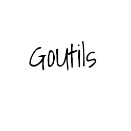
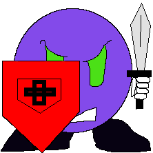
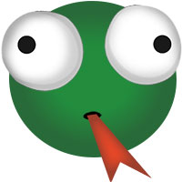
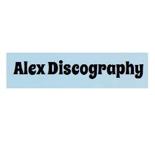

Some of the software projects I have worked on in recent times are outlined below:
GoUtils

GoUtils is a Go implementation of some string manipulation libraries of Apache Commons.
This is an open source project aimed at providing Go developers with utility functions to
manipulate strings in various ways.
TapGame

TapGame is an Android-based game where the player taps monsters on the screen
to destroy them. A score is assigned to the player dependent on how quickly all
monsters on the screen are destroyed. The monsters alternate between a protected
state (holding a shield) and a vulnerable state (no shield).
TapGame exhibits the use of Model-View-Controller (MVC) design pattern.
Crime Reporter
Crime Reporter is an online platform which monitors criminal activity in various geographic locations.
Crime Reporter exhibits the use of the Google Maps API, JavaScript, HTML, CSS, and Php. I worked on this project
with some class members (each with different roles), and I was mainly responsible for the Google API-related
portions of the project.
Drake the Snake

Drake the Snake is yet another rendition of the classic snake game! It was created using the Processing
open-source programming language.
Alex Discography

Alex Discography is a mini storage tool for holding music information of various artists.
It uses Java's Abstract Window Toolkit (AWT) to collect the artist information, and ultimately
displays the information on a browser.
Alex Discography exhibits the use of JDOM, XML, XML Schema, XSLT, JavaScript, HTML, and CSS.